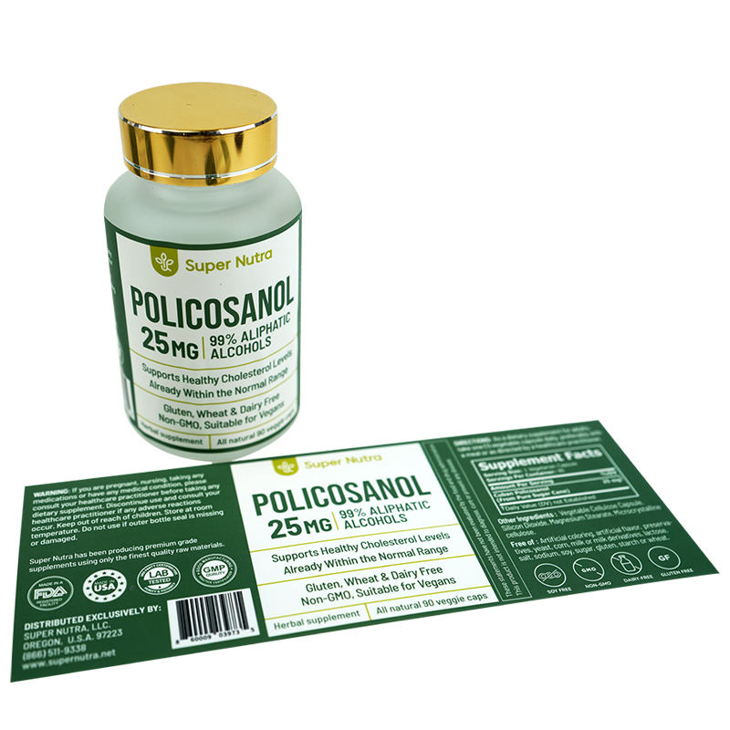

Supplement brands often add a barcode late because it feels like a back-panel detail. Yet codes are frequently the most sensitive part of the artwork: they need clear contrast, enough untouched space and a position that will not crease around a bottle curve. Treat the scan area as a functional panel from the first draft.

Give the barcode and QR code different jobs
A retail barcode and a QR code are not interchangeable. The barcode is normally used by a defined retail or inventory workflow; the QR code can send a customer to a page, product guide, reorder flow or other buyer-controlled information. Decide the purpose of each code before adding both. Two codes with unclear roles make the packaging look busy and make proof review harder.
| Retail barcode | Reserve a calm high-contrast area and confirm the applicable format and acceptance criteria with the retailer or marketplace. |
|---|---|
| QR code | Use it for a specific destination and confirm that the final URL is live before approving the design. |
| Batch or serial field | Keep a defined variable-data zone separate from scannable codes and fine decorative effects. |
| Matching box | Use the box for codes or information that would force the bottle label into an unreadable layout. |
Place codes where the bottle stays most predictable
Curved shoulders, deep bottle ribs, seams and narrow panels can distort or interrupt printed elements. A flatter lower back panel is often easier to scan than a label edge wrapped around a tight curve. The right location depends on the actual bottle, so share its diameter, label panel and a photo rather than relying only on a generic bottle template.
Barcode and QR proof checklist
- Confirm the final code data and destination before print approval.
- Keep the code separate from busy images, metallic effects and tiny background patterns.
- Leave sufficient clear space around the code.
- Check the actual printed code size against the bottle curve and final label size.
- Ask retailers, marketplaces or internal operations teams to confirm their own scanning requirements.
- Use a matching box when the bottle label cannot provide a reliable scan area.
Contrast is more useful than decoration in a scan zone
Very dark gradients, foil and holographic effects can give a supplement label a premium finish. They are less helpful behind a code that has to scan consistently. Reserve a solid, quiet panel for the code and let the special finish work elsewhere in the layout. This produces a more intentional design than trying to decorate every square centimeter.


Verify the market rule outside the print proof
A digital proof can confirm that a code has a clear visual position. It cannot determine whether a particular retailer, fulfillment system or market accepts the code format you chose. Confirm those requirements with the platform, retailer or operations owner before placing a production order. RP can support the printed label layout once that information is supplied.
Build a supplement label that scans cleanly
Send your bottle size, artwork, barcode or QR data and the intended selling channel. We can reserve a practical print area and prepare a free digital proof.
Chat on WhatsAppFAQ
Can I put a barcode on a curved part of a bottle label?
It may work in some cases, but a flatter predictable area is the safer starting point. Validate the final placement on the real bottle.
Should the QR code go on the front or back label?
Choose the location based on its role. A promotional or product-information QR can be visible; a retailer barcode usually belongs on a quieter information panel.
Can RP generate the product codes?
Send your approved code artwork or data. Brand owners should obtain and validate any retail or marketplace code requirements with the relevant organization.